Kısaca nasıl işler?
Siz yalnızca A kitapçığını hazırlarsınız. Araç soruların ve şıkların yerini değiştirerek B, C, D ve E kitapçıklarını ve her birinin cevap anahtarını üretir. Bütün işlem kendi bilgisayarınızda yapılır; sorularınız internete gönderilmez.
Araç arka planda ne yapar?
- Dosyayı okur. Word dosyasının içini tarayıcınızda açar; soruları numaralarından, şıkları "A)" gibi başlangıçlarından tanır. Metin dosyasından önce düzenli bir Word dosyası oluşturur.
- Temizler. Word açıklamalarını, izlenen değişiklikleri, gizli metni ve yazar bilgisini öğrenciye gidecek kopyalardan siler.
- Karıştırır. Her kitapçık için soruların ve şıkların sırasını değiştirir. Bu karıştırma rastgele görünür ama üretim koduna bağlıdır: aynı kod aynı kitapçıkları verir.
- İzler. Hangi sorunun hangi kitapçıkta kaçıncı sıraya, hangi şıkkın hangi harfe gittiğini kaydeder. Cevap anahtarları, ÖÇ eşlemesi ve madde analizi bu kayıttan hesaplanır.
- Dosyaları üretir. Kitapçıkları Word olarak, cevap anahtarını tablo, CSV ve PFRM-248 Word dosyası olarak verir.
İçindekiler
- A kitapçığını hazırlama
- Aracı açma ve dosyayı yükleme
- Doğru cevapları işaretleme
- Öğrenme çıktıları (ÖÇ): sistem nasıl çalışır?
- Seçenekler ve kitapçıkları oluşturma
- İndirme, cevap anahtarı ve yazdırma
- Çoğaltma ve sınav günü
- Sınavdan sonra: iptal ve düzeltme
- Madde analizi, öğrenci puanları ve ÖÇ tablosu
- Deneme dosyalarıyla alıştırma
- Sık karşılaşılan durumlar
1A kitapçığını hazırlama
A kitapçığını üç yoldan biriyle hazırlayabilirsiniz. Hangisini seçerseniz seçin araç aynı şekilde çalışır.
Aracın ilk adımındaki Sınav şablonlarını aç düğmesine basın (aşağıdaki görselde 1 numara). Açılan Personel Formları sayfasında Sınav İşlemleri başlığının altından Sınav Soruları Formu (Test) ya da (Klasik ve Karma) dosyasını indirin. Ders bilgilerini doldurun, soruları ve şıkları kutulara yazın. Kullanmadığınız "Ek soru tipleri" örneklerini ve boş kalan soruları silip kaydedin.
Her soru
1. ya da 1) ile başlasın (Word'ün otomatik numaralandırması da olur). Her şık ayrı satırda A), B) ile başlasın. Görsel, tablo ve öncüller soru ile şıklar arasında olabilir.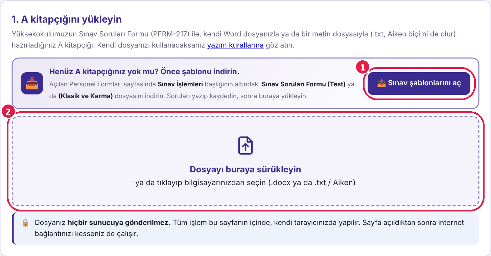
- Sınav şablonlarını aç. Yüksekokulun Personel Formları sayfasını yeni sekmede açar. Test sınavı için "Sınav Soruları Formu (Test)", açık uçlu ya da karışık sınav için "Sınav Soruları Formu (Klasik ve Karma)" dosyasını indirin.
- Dosya yükleme alanı. Hazırladığınız A kitapçığını buraya sürükleyin ya da tıklayıp seçin (bir sonraki bölüm).
Yol 3 · Metin dosyası (.txt) ya da Aiken biçimi
Soruları Not Defteri'nde düz metin olarak da yazabilirsiniz. Araç bu dosyadan düzgün biçimli bir A kitapçığı (Word) oluşturur. Aiken biçiminde (Moodle'ın da kullandığı biçim) her sorunun altına ANSWER: B satırı yazılır; doğru cevaplar araçta kendiliğinden işaretlenir.
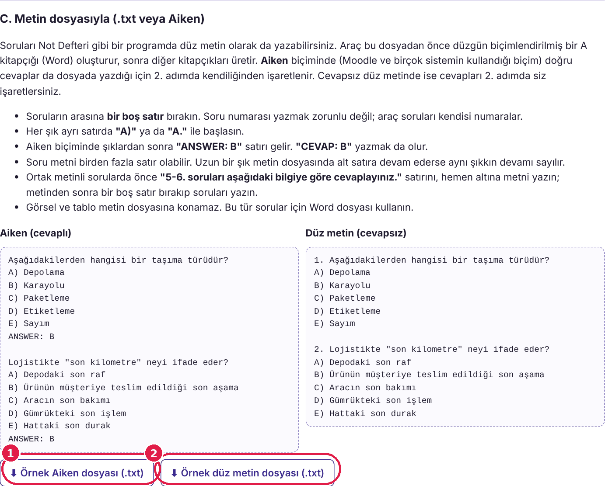
- Örnek Aiken dosyası. İndirip açın, kendi sorularınızı aynı düzende yazın.
- Örnek düz metin dosyası. Cevapları araçta işaretlemek istiyorsanız bu düzeni kullanın.
7-9. soruları aşağıdaki metne göre cevaplayınız. gibi bir satır yazın. Araç bu soruları metinle birlikte taşır ve başlıktaki numaraları her kitapçıkta düzeltir. "Yukarıdaki soruya göre" diye başlayan sorular da bir önceki soruyla birlikte kalır.2Aracı açma ve dosyayı yükleme
Aracı yüksekokulun web sitesindeki Personel Formları sayfasında, "Sınav İşlemleri" başlığının altındaki bağlantıdan açın. Size e-posta veya mesajla gelen başka kopyaları kullanmayın.
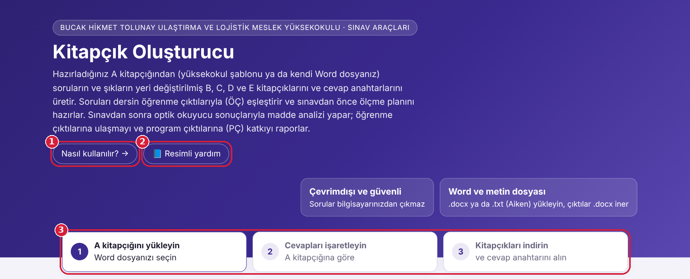
- Nasıl kullanılır? Aynı sayfadaki kısa yazım kurallarına ve örneklere götürür.
- Resimli yardım. Şu an okuduğunuz bu sayfayı açar.
- Adım çubuğu. Hangi adımda olduğunuzu gösterir: yükle, işaretle, indir.
A kitapçığını yükleme alanına sürükleyin ya da tıklayıp seçin. Yükleme bitince dosyanın adı, türü ve kaç soru bulunduğu görünür:
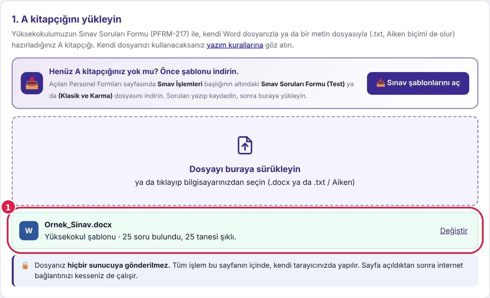
- Dosya bilgisi. "Yüksekokul şablonu · 25 soru bulundu, 25 tanesi şıklı" gibi. Soru sayısı beklediğinizden azsa ya da fazlaysa Word'de numaraları ve şıkları kontrol edip dosyayı yeniden yükleyin. Sarı uyarı kutuları çıkarsa okuyun; neyin düzeltilmesi gerektiğini yazar.
3Doğru cevapları işaretleme
A kitapçığının doğru cevaplarını işaretlersiniz. Diğer kitapçıkların anahtarı kendiliğinden hesaplanır. Aiken dosyası yüklediyseniz cevaplar zaten işaretlidir; yalnızca kontrol edin.
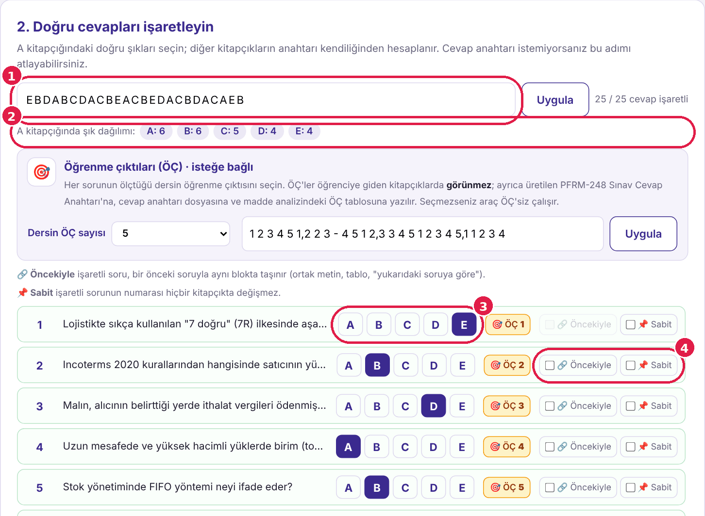
- Toplu giriş. Bütün cevapları tek seferde yazıp Uygula'ya basın. Örneğin
EBDABCDACB...1. sorunun cevabı E, 2. sorunun cevabı B demektir. - Şık dağılımı. A kitapçığında kaç sorunun cevabının hangi harfte olduğunu gösterir. Bir harf çok fazlaysa öğrenci tahminle puan alabilir; dengeli olması iyidir.
- Tek tek işaretleme. İsterseniz her sorunun doğru harfine tıklayın. İşaretli harf mor görünür.
- 🔗 Öncekiyle ve 📌 Sabit. "Öncekiyle" işaretli soru bir önceki soruyla aynı blokta taşınır. "Sabit" işaretli sorunun numarası hiçbir kitapçıkta değişmez. Ortak metinli gruplar ve "yukarıdaki soruya göre" soruları kendiliğinden işaretlenir.
4Öğrenme çıktıları (ÖÇ): sistem nasıl çalışır?
Bir sınavın hangi öğrenme çıktılarını ne ölçüde sağladığını göstermek, MEDEK ve YÖKAK süreçlerinde istenen bir kanıttır. Kitapçık Oluşturucu bunu sorulara hiçbir şey eklemeden yapar: ÖÇ'leri yalnızca araçta seçersiniz, araç da bunları ayrı dosyalara yazar.
ÖÇ'leri seçme (2. adım)
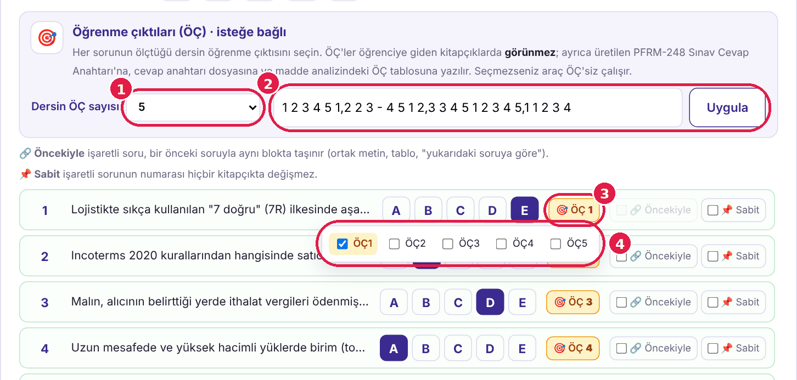
- Dersin ÖÇ sayısı. Ders Bilgi Paketindeki öğrenme çıktısı sayısını seçin (1 ile 15 arası). "ÖÇ kullanmıyorum" seçili kalırsa ÖÇ alanları gizlenir.
- Toplu giriş. Bütün soruların ÖÇ'lerini soru sırasıyla, boşlukla ayırarak yazıp Uygula'ya basın. Birden fazla ÖÇ için virgül, ÖÇ'süz soru için tire kullanın:
1 2 1,3 - 2demek 1. soru ÖÇ1, 2. soru ÖÇ2, 3. soru ÖÇ1 ve ÖÇ3, 4. soru ÖÇ'süz, 5. soru ÖÇ2 demektir. - Sorunun ÖÇ düğmesi. Her sorunun yanındaki "🎯 ÖÇ" düğmesi seçili ÖÇ'leri gösterir. Seçim yapılan sorular sarı görünür.
- Tek tek seçme. Düğmeye tıklayınca açılan listeden bir ya da birden fazla ÖÇ işaretleyin.
[ÖÇ2] ya da [ÖÇ1,ÖÇ3] gibi notlar varsa araç bunları okuyup seçimleri kendiliğinden doldurur ve öğrenciye giden kitapçıklardan siler. Aiken dosyasında ANSWER: B satırından sonraki OC: 2 satırı da okunur. Bunları yazmanız gerekmez; seçimi araçta yapmanız yeterlidir.ÖÇ'lerin yazıldığı dosyalar
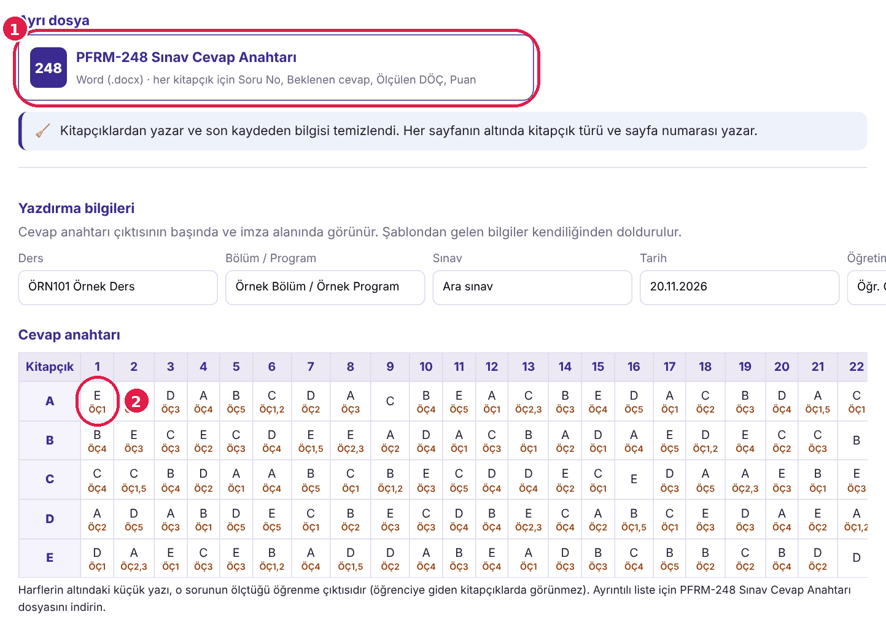
- PFRM-248 Sınav Cevap Anahtarı. Yüksekokulun formunun doldurulmuş hâli Word olarak iner. Ders, bölüm/program, öğretim elemanı, sınav türü ve tarih "Yazdırma bilgileri" kutularından alınır.
- Cevap anahtarı tablosu. Her cevap harfinin altında o sorunun ölçtüğü ÖÇ küçük yazıyla görünür. Aynı bilgi "Cevap anahtarını indir (Excel/CSV)" dosyasına da yazılır; madde analizi ÖÇ'leri bu dosyadan okur.
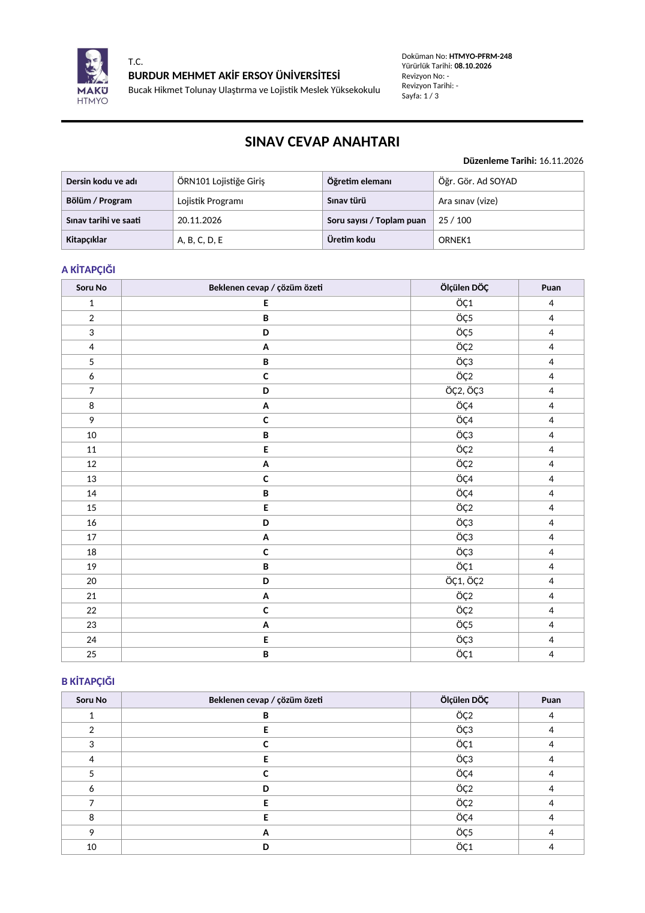
- Bilgi tablosu. Ders, öğretim elemanı, bölüm/program, sınav türü, tarih, soru sayısı ve toplam puan, kitapçıklar ve üretim kodu.
- Ölçülen DÖÇ sütunu. Her kitapçık için ayrı tablo vardır. Sorular karıştığı için her kitapçıkta ÖÇ'ler o kitapçığın sırasına göre yazılır: A'daki 1. soru B'de 7. sıraya gittiyse onun ÖÇ'sü de B tablosunun 7. satırındadır. Puan sütunu, şablondaki soru puanlarından ya da test sınavında eşit dağılımdan gelir.
Dosya, sınav evrakıyla birlikte Bölüm Başkanlığına teslim edilir ve imza alanları bulunur.
Sınavdan sonra: Öğrenme Çıktılarına Ulaşma tablosu
Madde analizini çalıştırdığınızda, ÖÇ seçilmişse soru tablosunun altında bu tablo çıkar (bkz. Madde analizi).
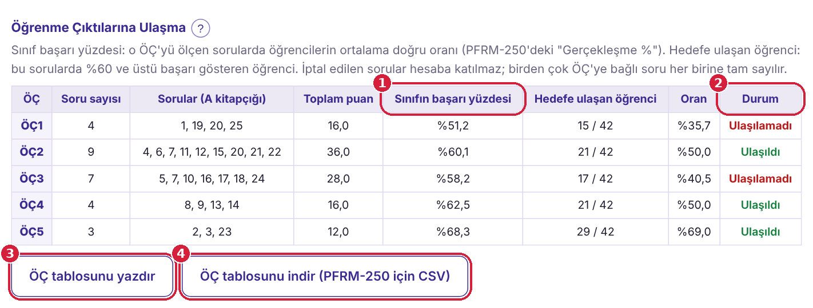
- Sınıfın başarı yüzdesi. O ÖÇ'yü ölçen sorularda bütün öğrencilerin ortalama doğru oranıdır. PFRM-250'deki "Gerçekleşme %" değeri budur.
- Durum. Sınıfın başarı yüzdesi başarı eşiğine (varsayılan %60) ulaştıysa "Ulaşıldı", ulaşmadıysa "Ulaşılamadı". Hiç sorusu olmayan ÖÇ "Ölçülmedi" görünür.
- ÖÇ tablosunu yazdır. Başlığında ders, sınav türü, tarih, öğrenci sayısı, üretim kodu ve eşik bulunan tek sayfalık rapor.
- ÖÇ tablosunu indir (PFRM-250 için CSV). Excel'de açılır; "Gerçekleşme %" ve "Sonuç (S/X)" sütunları PFRM-250'deki aynı adlı sütunlara aktarılır.
Hesap nasıl yapılır? Bir örnek
ÖÇ2'yi 6 soru ölçüyor ve sınava 40 öğrenci girmiş olsun:
| Değer | Nasıl bulunur? | Örnek |
|---|---|---|
| Soru sayısı | ÖÇ2 seçilen ve iptal edilmemiş sorular | 6 |
| Toplam puan | Bu soruların puanlarının toplamı | 6 × 4 = 24 |
| Sınıfın başarı yüzdesi | Bu 6 soruda verilen toplam doğru ÷ (40 öğrenci × 6 soru) | 156 ÷ 240 = %65 |
| Hedefe ulaşan öğrenci | Bu 6 sorunun en az %60'ını (4 tanesini) doğru yapan öğrenci | 27 öğrenci (%67,5) |
| Durum | %65, %60 eşiğinin üstünde | Ulaşıldı |
- Birden fazla ÖÇ'ye bağlı soru her ÖÇ'nün hesabına tam olarak girer (ÖÇ1,ÖÇ3 seçilen soru hem ÖÇ1'e hem ÖÇ3'e sayılır).
- İptal edilen sorular ÖÇ hesabına katılmaz.
- ÖÇ seçilmemiş sorular ÖÇ tablosuna girmez; tablonun altında kaç tane olduğu yazar.
- Başarı eşiği madde analizindeki "Başarı eşiği (%)" kutusundan değiştirilebilir; değiştirince tablo yeniden hesaplanır.
- PÇ'ye aktarma: Bir ÖÇ'nün hangi program çıktısına (PÇ) katkı verdiği, Ders Bilgi Paketindeki ÖÇ-PÇ ilişki matrisinden alınır. Program koordinatörü, PÇ'ye katkı veren derslerin ÖÇ tablolarındaki gerçekleşme yüzdelerini PFRM-250'ye işler.
5Seçenekler ve kitapçıkları oluşturma
Varsayılan seçenekler çoğu sınav için uygundur. Yalnızca kaç kitapçık istediğinizi seçip Kitapçıkları oluştur'a basmanız yeterlidir.
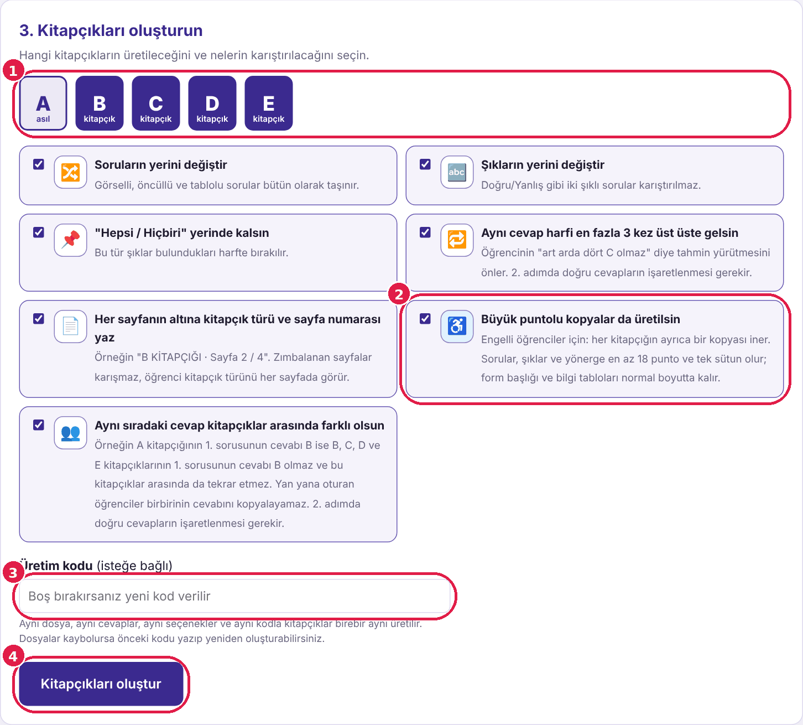
- Kitapçıklar. A her zaman üretilir. B, C, D ve E'den istediklerinizi seçin. Kalabalık salonda dört ya da beş kitapçık önerilir.
- ♿ Büyük puntolu kopyalar. Büyük puntolu soru kitapçığı hakkı olan engelli öğrenciler için her kitapçığın ayrıca bir kopyası iner. Sorular, şıklar ve yönerge en az 18 punto ve tek sütun olur; form başlığı ve bilgi tabloları normal boyutta kalır. Öğrenciye, salonda dağıtılan kitapçık türünün büyük puntolu kopyasını verin.
- Üretim kodu. Boş bırakırsanız araç yeni bir kod verir. Aynı A kitapçığı, aynı cevaplar, aynı seçenekler ve aynı kodla kitapçıklar birebir aynı üretilir. Dosyaları kaybederseniz kodu yazıp yeniden oluşturabilirsiniz.
- Kitapçıkları oluştur. Birkaç saniye içinde indirme bağlantıları ve cevap anahtarı görünür.
| Seçenek | Ne işe yarar? |
|---|---|
| 🔀 Soruların yerini değiştir | Soruların sırası her kitapçıkta farklı olur. Görselli, öncüllü ve tablolu sorular bütün olarak taşınır. |
| 🔤 Şıkların yerini değiştir | Şıkların sırası değişir. Doğru/Yanlış gibi iki şıklı sorular karıştırılmaz. |
| 📌 "Hepsi / Hiçbiri" yerinde kalsın | "Hepsi", "Hiçbiri" gibi şıklar bulundukları harfte kalır. |
| 🔁 En fazla 3 kez üst üste | Aynı cevap harfi art arda dörtten fazla gelmez; öğrenci örüntüden tahmin yürütemez. |
| 📄 Alt bilgi | Her sayfanın altına "B KİTAPÇIĞI · Sayfa 2 / 4" yazılır; zımbalanan sayfalar karışmaz. |
| 👥 Aynı sıradaki cevap farklı olsun | A kitapçığının 1. sorusunun cevabı B ise diğer kitapçıkların 1. sorusunun cevabı B olmaz ve birbirini tekrar etmez. Yan yana oturan öğrenciler birbirinin cevabını kopyalayamaz. |
6İndirme, cevap anahtarı ve yazdırma
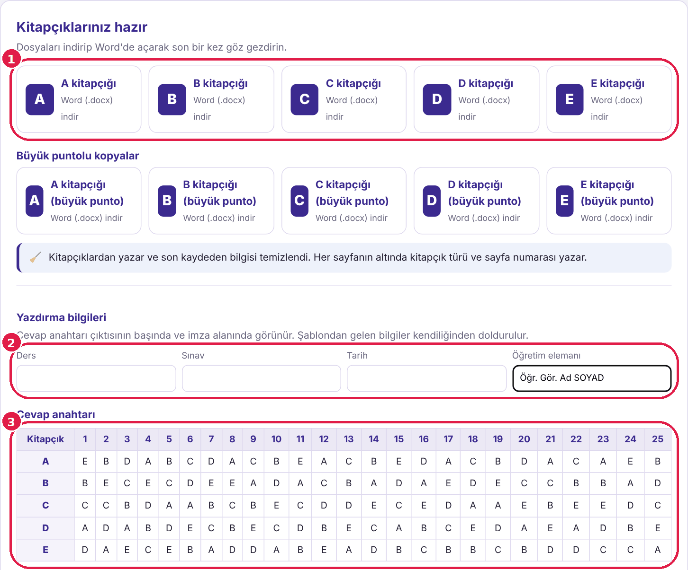
- Kitapçıkları indirin. Her kartta bir Word dosyası var. Büyük puntolu kopyalar istediyseniz ayrı bir satırda görünür. İndirdiğiniz dosyaları Word'de açıp göz gezdirin.
- Yazdırma bilgileri. Ders, bölüm/program, sınav, tarih ve öğretim elemanı; yazdırılan cevap anahtarının ve PFRM-248 dosyasının başında görünür. Şablon kullandıysanız kendiliğinden dolar.
- Cevap anahtarı tablosu. Her kitapçığın her sorusunun doğru cevabı; ÖÇ seçtiyseniz harfin altında ÖÇ'si. Altında soru eşleşmesi (B'deki 1. soru A'da kaçıncı soru) ve harf dağılımı tabloları bulunur. Bu ekranda ayrıca PFRM-248 Sınav Cevap Anahtarı Word dosyası da iner (bkz. ÖÇ bölümü).
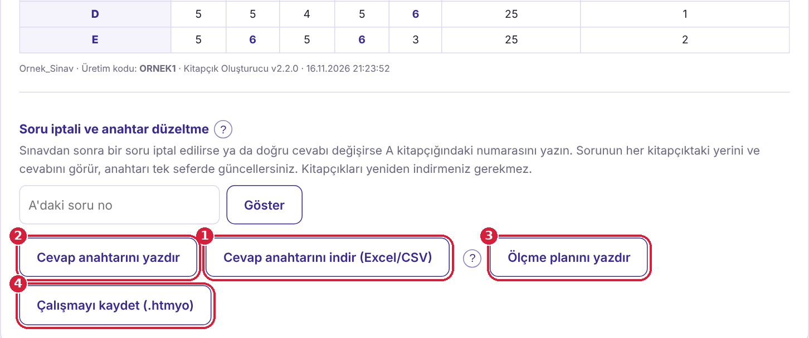
- Cevap anahtarını indir (Excel/CSV). Bu dosyayı mutlaka indirip saklayın.
- Cevap anahtarını yazdır. "GİZLİDİR · CEVAP ANAHTARI" başlıklı, imza alanlı bir sayfa yazdırır. Sınav evrakıyla birlikte saklanabilir.
8Sınavdan sonra: soru iptali ve anahtar düzeltme
Sınavdan sonra bir soru iptal edilirse ya da doğru cevabı değişirse, sonuç ekranının altındaki Soru iptali ve anahtar düzeltme bölümünü kullanın. Kitapçıkları yeniden indirmeniz gerekmez; yalnızca anahtar değişir.
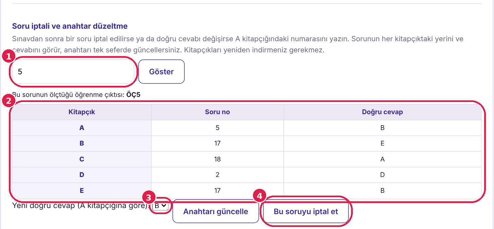
- A'daki soru numarası. Sorunun A kitapçığındaki numarasını yazıp Göster'e basın.
- Kitapçıklardaki yeri. Sorunun her kitapçıkta kaçıncı sırada olduğu ve doğru cevabı görünür. Görseldeki örnekte A'daki 5. soru B'de 17., D'de 2. sırada.
- Yeni doğru cevap. A kitapçığına göre yeni doğru harfi seçip Anahtarı güncelle'ye basın; bütün kitapçıkların anahtarı tek seferde düzelir.
- İptal. Bu soruyu iptal et ile soru anahtarda "İPT" olarak görünür. İptal edilen soru madde analizinde herkese doğru sayılır.
9Madde analizi ve öğrenci puanları
Optik formlar okutulduktan sonra kullanılır. Hangi soruların iyi çalıştığını, hangilerinin çok kolay, çok zor ya da hatalı olabileceğini, sınavın güvenilirliğini ve öğrenci puanlarını verir. B, C, D ve E kitapçıklarını kendiliğinden A sırasına çevirir. Bölüm, aracın sayfasının en altındadır.
Neye ihtiyacınız var?
| Dosya | Nereden gelir? |
|---|---|
| Cevap anahtarı dosyası (.csv) | Kitapçıkları oluşturduğunuz gün sonuç ekranındaki "Cevap anahtarını indir (Excel/CSV)" düğmesiyle indirdiğiniz dosya. Kitapçıkları aynı oturumda, sayfayı kapatmadan oluşturduysanız gerekmez. |
| Optik sonuç dosyası (.xlsx, .csv, .txt) | Optik okuyucudan alınan öğrenci cevapları. Her satırda bir öğrenci: numara (ya da ad), kitapçık türü ve cevaplar. Boş soru için tire (-) ya da boşluk, birden çok işaret için yıldız (*). |
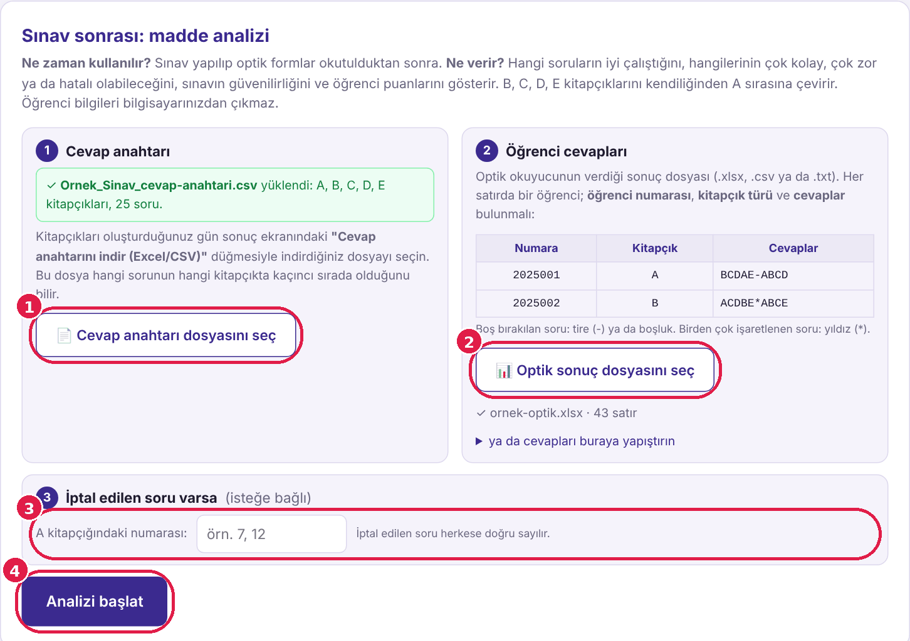
- Cevap anahtarı dosyasını seçin. Yüklenince yeşil kutuda dosya adı, kitapçıklar ve soru sayısı görünür. Kitapçıkları bu oturumda oluşturduysanız kutu zaten yeşildir; bir şey seçmeyin.
- Optik sonuç dosyasını seçin. Dosya yerine cevapları kopyalayıp "ya da cevapları buraya yapıştırın" kutusuna da yapıştırabilirsiniz.
- İptal edilen sorular. Varsa A kitapçığındaki numaralarını virgülle yazın (örneğin
7, 12). - ÖÇ raporu. Başarı eşiğini (varsayılan %60) ve rapor başlığına girecek ders, sınav türü ve tarihi kontrol edin. Anahtar dosyasından kendiliğinden dolar.
- Analizi başlat. ÖÇ seçilmişse soru tablosunun altında Öğrenme Çıktılarına Ulaşma tablosu da çıkar.
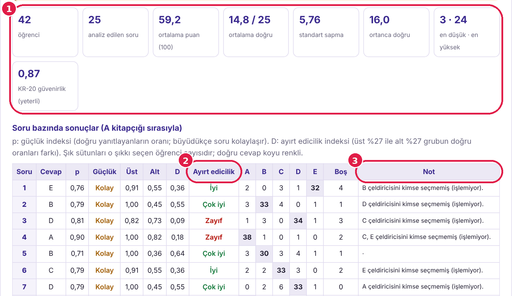
- Özet kutuları. Öğrenci sayısı, ortalama puan, standart sapma, en düşük ve en yüksek doğru sayısı ve KR-20 güvenirlik katsayısı.
- Ayırt edicilik. Sorunun başarılı öğrencilerle başarısız öğrencileri ne kadar iyi ayırdığı. Renkli yorum: yeşil iyi, sarı düzeltilmeli, kırmızı zayıf.
- Not sütunu. Araç dikkat edilmesi gereken durumları yazar: anahtar hatası olabileceği, kimsenin seçmediği (işlemeyen) çeldiriciler, üst grubun yanlış şıkka yöneldiği sorular.
Sonuçlar nasıl okunur?
| Değer | Anlamı | Yorum |
|---|---|---|
| p (güçlük) | Soruyu doğru yanıtlayanların oranı. Büyüdükçe soru kolaylaşır. | 0,30 altı zor · 0,30-0,70 orta · 0,70 üstü kolay |
| D (ayırt edicilik) | En başarılı %27 ile en başarısız %27'nin doğru oranları farkı. | 0,40 ve üstü çok iyi · 0,30-0,39 iyi · 0,20-0,29 düzeltilmeli · 0,19 ve altı zayıf · negatif: anahtarı kontrol edin |
| KR-20 | Sınavın bir bütün olarak tutarlılığı (güvenirlik). | 0,70 ve üstü genellikle yeterli sayılır |
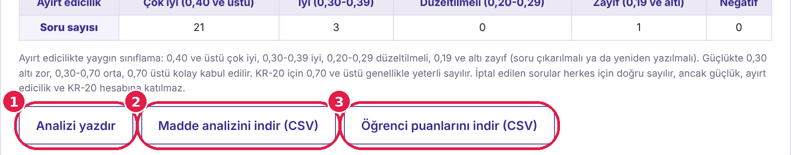
- Analizi yazdır. Ders dosyası ya da kalite kanıtı için yazdırılabilir rapor.
- Madde analizini indir. Soru bazındaki bütün değerler Excel'de açılabilen bir dosya olarak iner.
- Öğrenci puanlarını indir. Her öğrencinin kitapçık türü, doğru, yanlış, boş sayısı, 100 üzerinden puanı ve ÖÇ seçildiyse her ÖÇ'deki başarı yüzdesi.
10Deneme dosyalarıyla alıştırma
Aracı gerçek bir sınavdan önce denemek için aşağıdaki örnek dosyaları kullanabilirsiniz. Öğrenci adları ve cevapları uydurmadır.
Alıştırma adımları
- Kitapçık Oluşturucu'yu açın ve Örnek A kitapçığını yükleyin.
- Toplu giriş kutusuna
EBDABCDACBEACBEDACBDACAEByazıp Uygula'ya basın. - İsterseniz ÖÇ'leri de deneyin: "Dersin ÖÇ sayısı" olarak 5 seçin, ÖÇ toplu giriş kutusuna
1 2 3 4 5 1,2 2 3 - 4 5 1 2,3 3 4 5 1 2 3 4 5,1 1 2 3 4yazıp Uygula'ya basın. - 3. adımda B, C, D ve E'nin hepsini seçin, seçenekleri olduğu gibi bırakın, üretim koduna
ORNEK1yazıp Kitapçıkları oluştur'a basın. Ortaya çıkan anahtar, örnek cevap anahtarı dosyasıyla birebir aynı olur. - Sonuç ekranından PFRM-248 Sınav Cevap Anahtarı'nı indirip açın.
- Sayfanın en altındaki madde analizinde örnek cevap anahtarı dosyasını ve örnek optik sonucu seçip Analizi başlat'a basın. Soru tablosunun altında ÖÇ tablosu da görünür.
?Sık karşılaşılan durumlar
Araç beklediğimden az ya da çok soru buldu.
Kendi Word dosyanızda her sorunun yeni paragrafta "1." ya da "1)" ile başladığını, şıkların ayrı satırlarda "A)" ile başladığını kontrol edin. Şablonda kullanmadığınız "Ek soru tipleri" örneklerini ve boş soruları silin. Sonra dosyayı yeniden yükleyin.
"Bir şık iki satıra bölünmüş olabilir" uyarısı çıktı.
Uyarıda yazan sorunun şıklarından birinin içinde Enter'a basılmış. Word'de o satırın başındaki boşluğu silip iki satırı birleştirin ve dosyayı yeniden yükleyin. Düzeltmezseniz o soru yine yer değiştirir ama şıkları karışmaz.
Eski .doc dosyam yüklenmiyor.
Dosyayı Word'de açıp "Farklı Kaydet" ile "Word Belgesi (.docx)" olarak kaydedin.
Kitapçıkları ya da cevap anahtarı dosyasını kaybettim.
Aynı A kitapçığını yükleyin, aynı cevapları işaretleyin, aynı seçenekleri seçin ve sonuç ekranında yazan üretim kodunu girerek yeniden oluşturun. Kitapçıklar ve anahtar birebir aynı çıkar. Kodu cevap anahtarı dosyasının içinde ve yazdırılan anahtarda da bulabilirsiniz.
Bir öğrenci yanlış kitapçık türünü kodlamış olabilir.
Öğrencinin puanı beklenmedik derecede düşükse, cevaplarını diğer kitapçıkların anahtarıyla da karşılaştırın. Optik forma kodlama hatası sınav yönetmeliğine göre değerlendirilir.
Madde analizinde "satır okunamadı" uyarısı çıktı.
Bu satırlarda kitapçık türü boş olabilir ya da anahtarda olmayan bir kitapçık harfi yazılı olabilir. Optik sonuç dosyasında kitapçık türünün ve cevapların ayrı sütunlarda olduğunu kontrol edin.
ÖÇ seçmek zorunlu mu? Öğrenci ÖÇ'leri görür mü?
Zorunlu değildir; seçmezseniz araç ÖÇ'siz çalışır. Öğrenci ÖÇ'leri görmez: ÖÇ bilgisi yalnızca PFRM-248 dosyasında, cevap anahtarı dosyasında ve madde analizinde bulunur. Dosyanızda [ÖÇ2] gibi notlar unutulmuşsa da araç bunları kitapçıklardan siler.
Eski cevap anahtarı dosyamla ÖÇ tablosu çıkmıyor.
1.3.0 sürümünden önce indirilen cevap anahtarı dosyalarında ÖÇ bilgisi yoktur; madde analizi yine çalışır ama ÖÇ tablosu çıkmaz. Aynı A kitapçığı, aynı cevaplar ve aynı üretim koduyla kitapçıkları yeniden oluşturup 2. adımda ÖÇ'leri seçin ve yeni anahtar dosyasını indirin. Kitapçıklar birebir aynı çıkar.
Sorularım internete gidiyor mu?
Hayır. Araç bir web sayfası olsa da bütün işlem kendi bilgisayarınızda, tarayıcınızın içinde yapılır. Sayfa, hiçbir sunucuya bağlanamayacak şekilde güvenlik kuralıyla kilitlenmiştir. Sayfa açıldıktan sonra internet bağlantınızı kesseniz de çalışır.